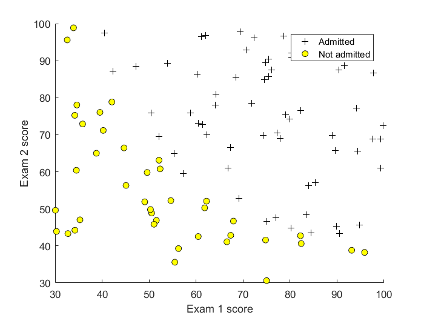
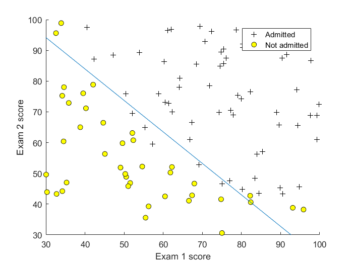
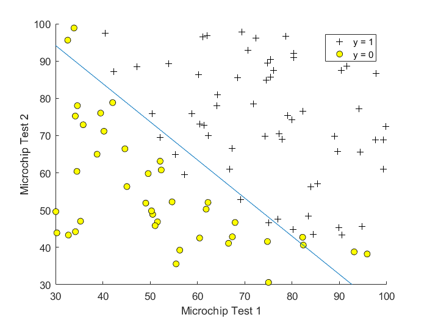
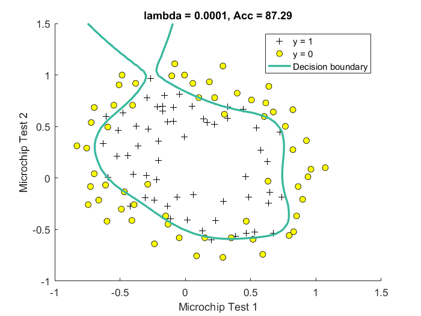
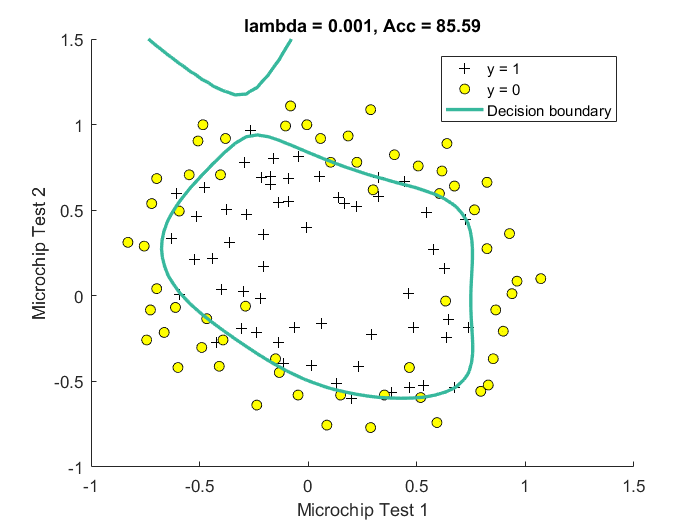
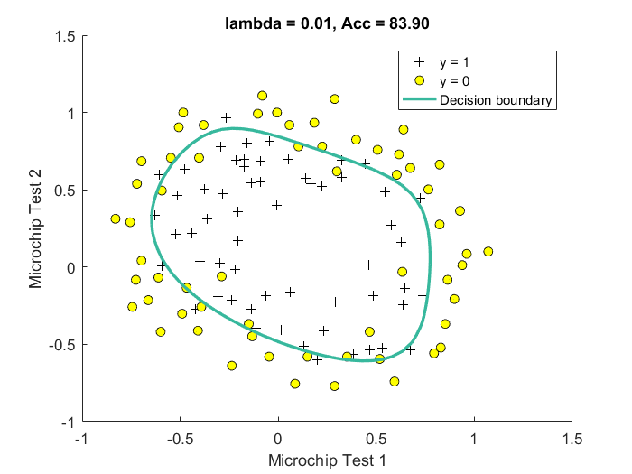
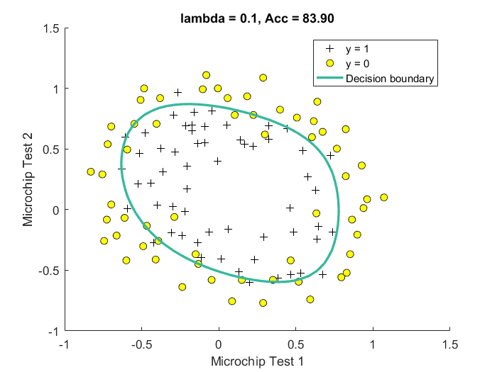
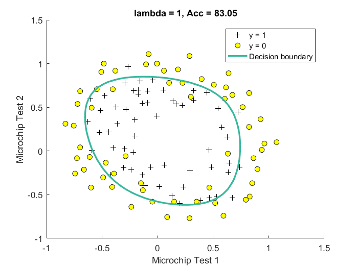
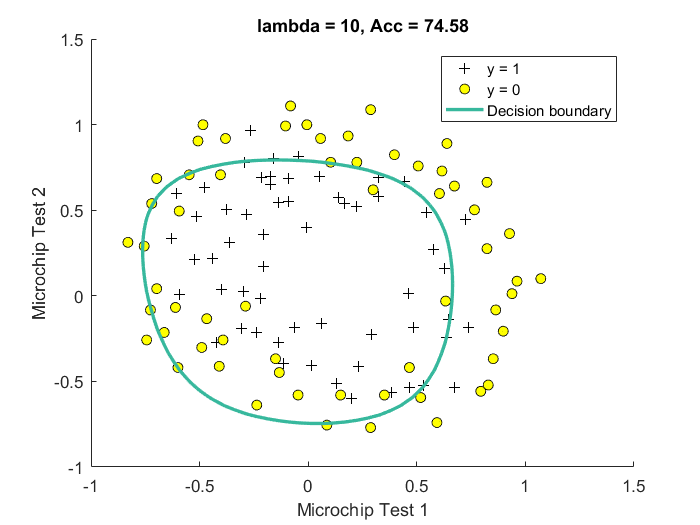

Machine Learning implemented in MATLAB - Notebook 2: Logistic Regression
Author: Alberto Ibarrondo | Date: 25/04/2017 | License: MIT Free software
Contents
- 1 INTRODUCTION
- 2 LOGISTIC REGRESSION
- 2.1 Loading and Visualizing Data
- 2.2 Cost and Gradient
- 2.3 Optimization with fminunc
- 2.4 Prediction and Accuracies
- 3. REGULARIZATION IN LOGISTIC REGRESSION
- 3.1 Loading and Visualizing Data
- 3.2 Regularized Logistinc Regression
- 3.3 Regularization Model Selection based on Accuracy
1 INTRODUCTION
The objective of this notebook is to implement logistic regression with regularization and apply it to two different datasets.
Files included with this notebook
- MachLearnInMATLAB_2_LogisticRegression.m - MATLAB script for the whole implementation of the study. The script sets up the dataset for the problems and makes calls to the rest of the functions. The first part of the study implements logistic regression with two variables, while the second part covers logist regression with multiple variables and regularization.
- data1.txt – Training set for the logistic regression
- data2.txt – Training set for the log. regression with regularization
- computeCost.m - Function to compute the cost of logistic regression
- costFunctionReg.m - Regularized Logistic Regression Cost
- mapFeature.m - Function to generate polynomial features
- sigmoid.m - Implementation of Sigmoid Function
- plotLogReg.m - Plot the data with 2 parameters and labels 0/1
- plotDecisionBoundary.m - Plot the decision boundary as well
2 LOGISTIC REGRESSION
2.1 Loading and Visualizing Data
Load Data
- X are two columns with the exam scores
- y is the label (1 is accepted, 0 is not accepted)
clear ; close all; clc data = load('data1.txt'); X = data(:, [1, 2]); y = data(:, 3); [m, n] = size(X); % number of training examples = 100 fprintf('2.1 Loading and Visualizing Data ...\n') fprintf(' Data Size: '); fprintf('%d ', [m, n]); fprintf('\n')
2.1 Loading and Visualizing Data ...
Data Size: 100 2
Plot Data
plotLogReg(X,y) xlabel('Exam 1 score') ylabel('Exam 2 score') legend('Admitted', 'Not admitted')
2.2 Cost and Gradient
X = [ones(m, 1) X]; % Add intercept term to x and X_test init_theta = zeros(n + 1, 1); % Initialize fitting parameters % Compute and display initial cost and gradient [cost, grad] = costFunction(init_theta, X, y); fprintf('2.2 Cost at initial theta (zeros): %f\n', cost); fprintf(' Gradient at initial theta (zeros): %f\n', grad);
2.2 Cost at initial theta (zeros): 0.693147
Gradient at initial theta (zeros): -0.100000
Gradient at initial theta (zeros): -12.009217
Gradient at initial theta (zeros): -11.262842
2.3 Optimization with fminunc
opts = optimset('GradObj', 'on', 'MaxIter', 400); %Set options % Convex optim to obtain the optimal theta [theta, cost] = ... fminunc(@(t)(costFunction(t, X, y)), init_theta, opts); % Print theta to screen fprintf('2.3 Cost at theta found by fminunc: %f\n', cost); fprintf(' theta: %f\n', theta); % Plot Boundary plotDecisionBoundary(theta, X, y); xlabel('Exam 1 score') ylabel('Exam 2 score') legend('Admitted', 'Not admitted')
Local minimum possible.
fminunc stopped because the final change in function value relative to
its initial value is less than the default value of the function tolerance.
2.3 Cost at theta found by fminunc: 0.203506
theta: -24.932982
theta: 0.204408
theta: 0.199618
 2.4 Prediction and Accuracies
We use the logistic regression model to predict the probability that a student with score 45 on exam 1 and score 85 on exam 2 will be admitted.
Furthermore, we compute the training & test set accuracies of our model.
examScores = [45, 85]; prob = sigmoid([1 examScores] * theta); fprintf('2.4 Student [45, 85] -> p(admission) = %f\n', prob); % Compute accuracy on our training set prediction = (sigmoid(X*theta)>=0.5); accuracy = mean(double(prediction == y)) * 100; fprintf(' Train Accuracy: %f\n', accuracy);
2.4 Student [45, 85] -> p(admission) = 0.774323
Train Accuracy: 89.000000
3. REGULARIZATION IN LOGISTIC REGRESSION
3.1 Loading and Visualizing Data
Load Data * X are two columns with two features * y is the label (1 is accepted, 0 is not accepted)
data = load('data2.txt'); X = data(:, [1, 2]); y = data(:, 3); [m, n] = size(X); fprintf('3.1 Loading and Visualizing Data ...\n') fprintf(' Data Size: '); fprintf('%d ', [m, n]); fprintf('\n') % *Plot Data* plotLogReg(X, y); xlabel('Microchip Test 1') ylabel('Microchip Test 2') legend('y = 1', 'y = 0')
3.1 Loading and Visualizing Data ...
Data Size: 118 2
 3.2 Regularized Logistinc Regression
In this part we are given a dataset with data points that are not linearly separable. However, we can still use logistic regression to classify the data points.
To do so, we introduce more features to use - in particular polynomial features to our data matrix (similar to polynomial regression).
X = mapFeature(X(:,1), X(:,2), 6); % Add features, including bias term init_theta = zeros(size(X, 2), 1); % Initialize fitting parameters % Set regularization parameter lambda to 1 lambda = 1; % Compute initial cost and gradient for regularized logistic regression [cost, grad] = costFunctionReg(init_theta, X, y, lambda); fprintf('3.2 Cost at initial theta (zeros): %f\n', cost);
3.2 Cost at initial theta (zeros): 0.693147
3.3 Regularization Model Selection based on Accuracy
In this last section we try with several values for lambda and choose the best one.
fprintf('3.3 Model selection. Trying several lambdas\n'); init_theta = zeros(size(X, 2), 1); % Initialize fitting parameters opts = optimset('GradObj', 'on', 'MaxIter', 400); % Set Options for lambda = [0.0001 0.001 0.01 0.1 1 10] [theta, J, exit_flag] = ... % Optimize fminunc(@(t)(costFunctionReg(t, X, y, lambda)), init_theta, opts); % Plot Boundary %subplot(2,3,log10(lambda)+5) figure hold on plotDecisionBoundary(theta, X, y); hold on; xlabel('Microchip Test 1') ylabel('Microchip Test 2') legend('y = 1', 'y = 0', 'Decision boundary') % Compute accuracy on our training set prediction = (sigmoid(X*theta)>=0.5); accuracy = mean(double(prediction == y)) * 100; fprintf(' Train Accuracy: %f\n', accuracy); title(sprintf('lambda = %g, Acc = %.2f', lambda, accuracy)) end
3.3 Model selection. Trying several lambdas
Local minimum possible.
fminunc stopped because the final change in function value relative to
its initial value is less than the default value of the function tolerance.
Train Accuracy: 87.288136
Local minimum possible.
fminunc stopped because the final change in function value relative to
its initial value is less than the default value of the function tolerance.
Train Accuracy: 85.593220
Local minimum found.
Optimization completed because the size of the gradient is less than
the default value of the optimality tolerance.
Train Accuracy: 83.898305
Local minimum possible.
fminunc stopped because the final change in function value relative to
its initial value is less than the default value of the function tolerance.
Train Accuracy: 83.898305
Local minimum possible.
fminunc stopped because the final change in function value relative to
its initial value is less than the default value of the function tolerance.
Train Accuracy: 83.050847
Local minimum possible.
fminunc stopped because the final change in function value relative to
its initial value is less than the default value of the function tolerance.
Train Accuracy: 74.576271
      Based on our results, the best choice is lambda = 0.0001, although we should be aware of overfitting